Press kit
Noche de Juegos
Noche de Juegos (Game Night) is an app for families and groups who love board games: it organises the collection, logs every play and helps decide what to bring to the table.
- Developer
- Jorge Sanz Borrell · GitoCorp Studios
- Platforms
- iPhone and iPad
- Availability
- App Store
- Language
- Spanish
- Data
- On the device and in the family's iCloud
Ready-to-use texts.
Short and long descriptions, in English and Spanish. They are also in the text file inside the ZIP.
Short description
Noche de Juegos (Game Night) is an app for families and groups who love board games: it organises the collection, logs every play and helps decide what to bring to the table.
Description
Noche de Juegos brings a board game collection to life. Every game has its own page, every play is logged along with the winner, and challenges encourage the family to bring games back off the shelf.
Ludo, the app's assistant, suggests what to play based on the number of players, the time available, play history and active challenges. It runs entirely on the iPhone, with no external servers.
The collection is shared with the family through iCloud, and public game information can be filled in from BoardGameGeek. Player profiles, rankings and session planning round out an app designed to help people play more and choose better.
En español
Descripción corta
Noche de Juegos es la app para familias y grupos que juegan a juegos de mesa: organiza la ludoteca, registra cada partida y ayuda a decidir qué sacar a la mesa.
Descripción
Noche de Juegos convierte una colección de juegos de mesa en algo vivo. Cada juego tiene su ficha, cada partida queda registrada con quién ganó y los retos animan a sacar de la estantería juegos que llevaban tiempo sin jugarse.
Ludo, el asistente de la app, propone qué jugar según cuántos sois, el tiempo que tenéis, el historial de partidas y los retos activos. Funciona dentro del propio iPhone, sin depender de servidores externos.
La ludoteca se comparte con la familia mediante iCloud, y la información pública de cada juego puede completarse desde BoardGameGeek. Perfiles, rankings y planificación de sesiones completan una app pensada para jugar más y elegir mejor.
Highlights
An organised game library
The whole collection with its own page, added by hand or filled in with public information from BoardGameGeek.
Plays, challenges and rankings
Every play is logged, and challenges and session planning give continuity to game nights.
Ludo, the assistant
Recommends what to play based on the table, the time and the history, without leaving the iPhone.
Press images.
Compositions for articles and social media, made from real screenshots. Click one to download it at full size.
iPhone
Screenshots.
Real screenshots of the app, untouched, at the native resolution of the iPhone 17 Pro Max and the 13-inch iPad Pro.
iPhone
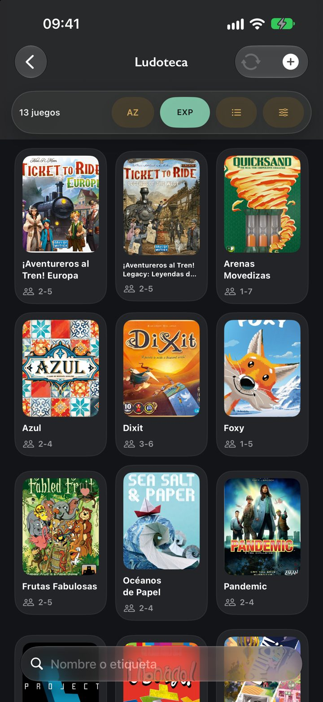
PNG · 1320 × 2868 · 3.2 MB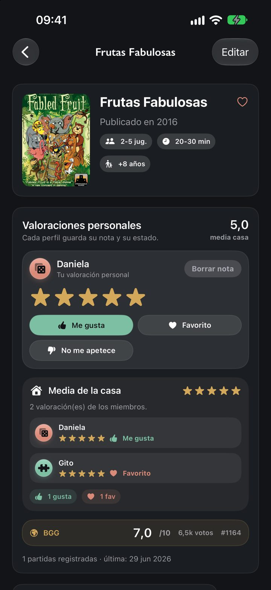
PNG · 1320 × 2868 · 800 KB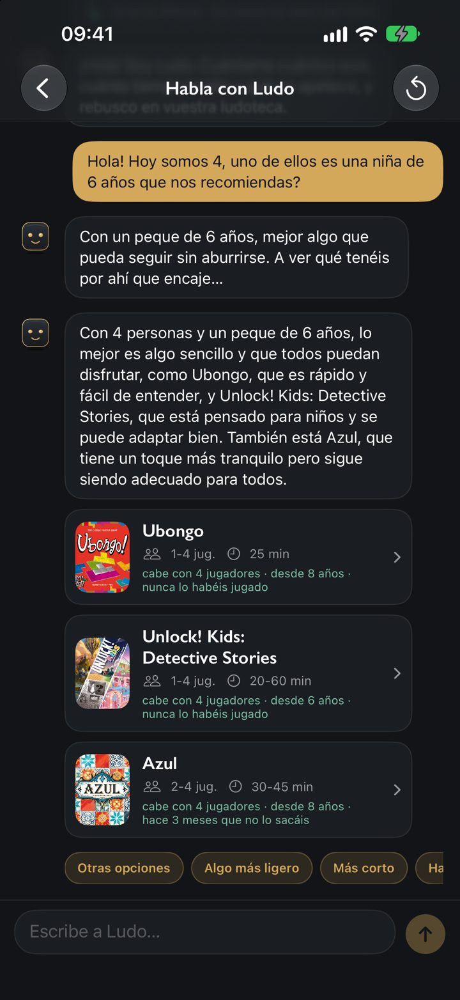
PNG · 1320 × 2868 · 1.1 MB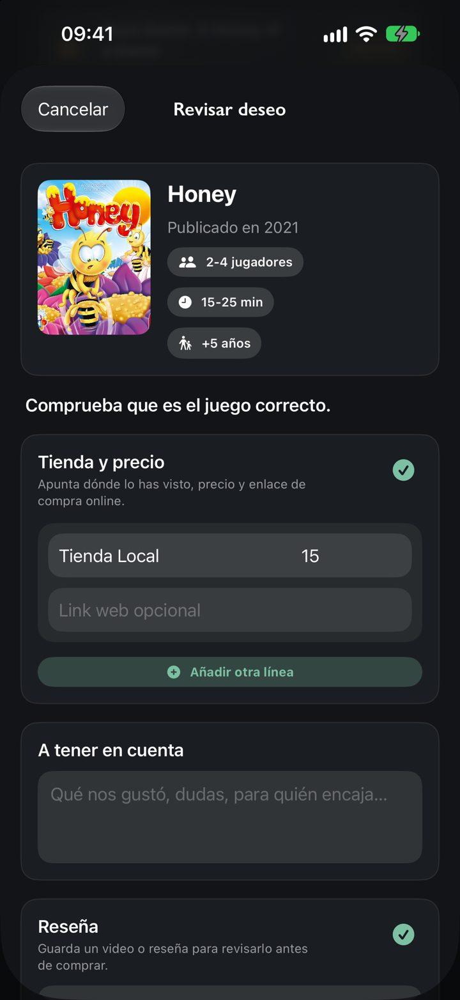
PNG · 1320 × 2868 · 810 KB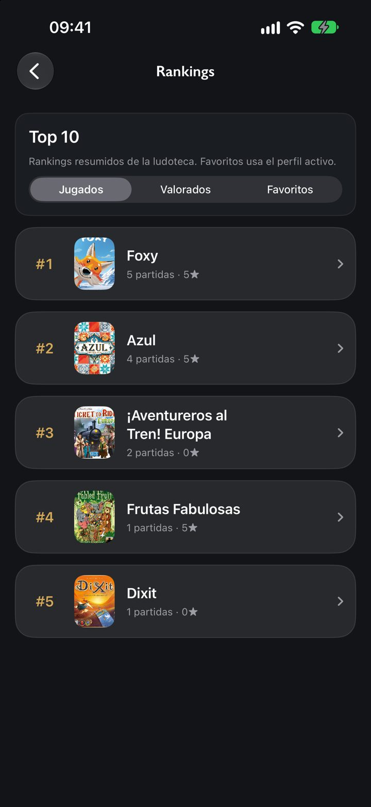
PNG · 1320 × 2868 · 612 KB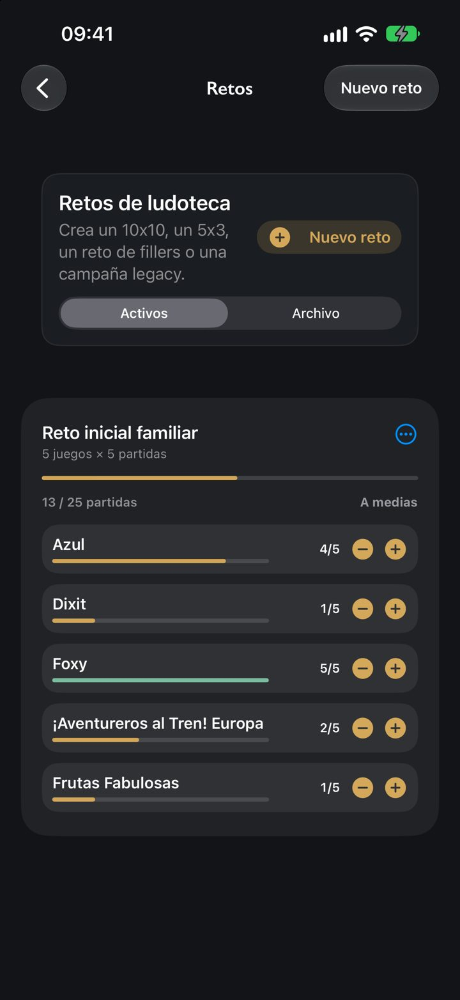
PNG · 1320 × 2868 · 256 KBiPad
On the App Store.
The images that accompany the app on its App Store page.
iPhone
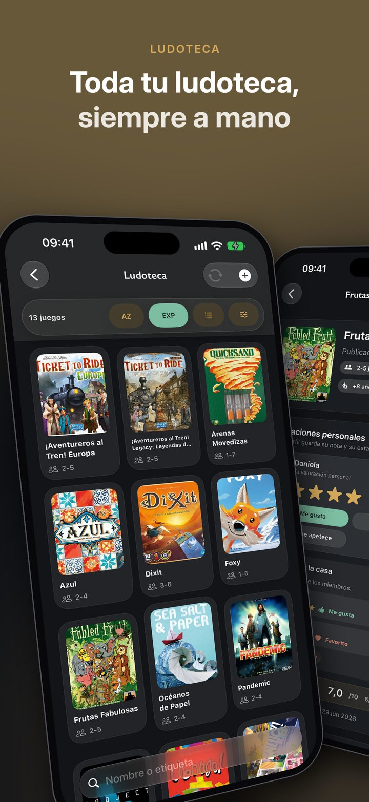
PNG · 1206 × 2622 · 2.2 MB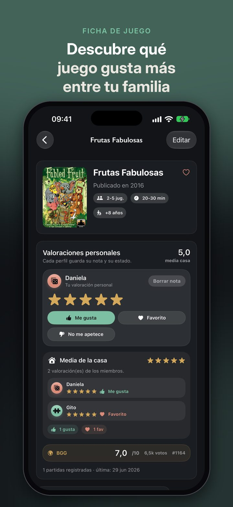
PNG · 1206 × 2622 · 693 KB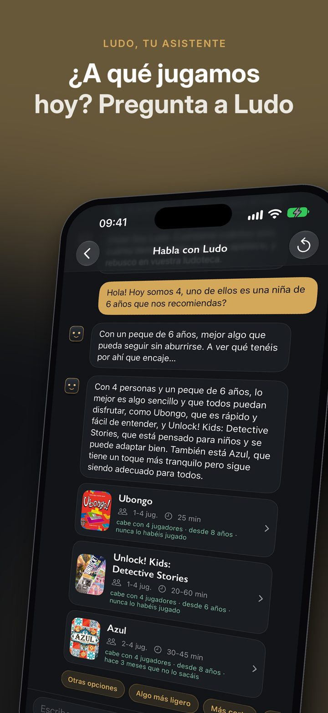
PNG · 1206 × 2622 · 1.3 MB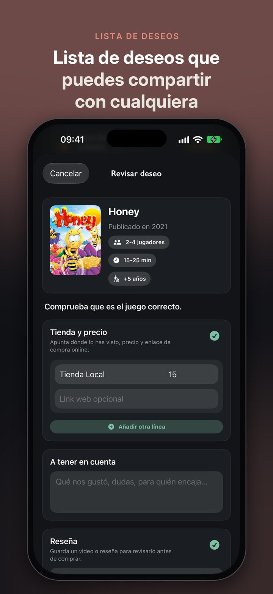
PNG · 1206 × 2622 · 646 KB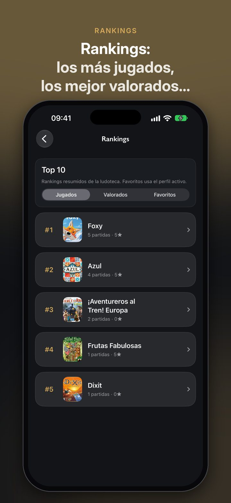
PNG · 1206 × 2622 · 531 KB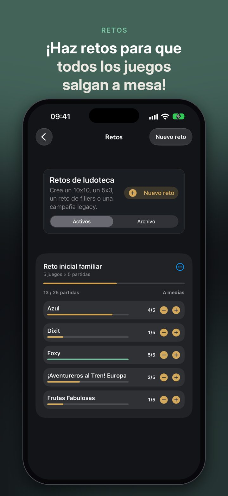
PNG · 1206 × 2622 · 411 KBiPad
Icon and logo.
Use them as they are: do not crop, distort or change their colours.


Press contact
For interviews, more material or any question about Noche de Juegos, write to GitoCorp Studios.